Every screen below is built from the game's own artwork and the shared stylesheet waldbuch.css. Numbered yellow notes explain what changes and why. Screens are shown at iPad 9th generation size (1080 × 810 points, landscape). Gameplay, puzzle rules and the order of elements are unchanged.
The den stays the accepted painting. What changes: one fox (the 3D fox is rebuilt to match the character sheet), one hotspot style, a calmer toolbar and a postcard moment that no longer blurs the live 3D canvas.
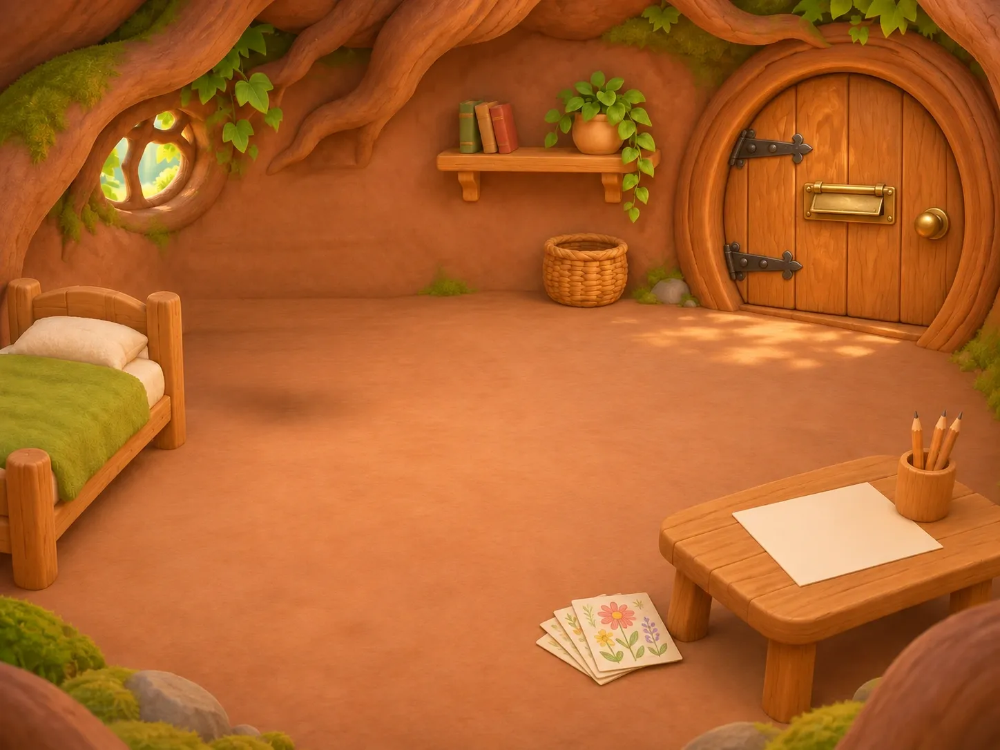
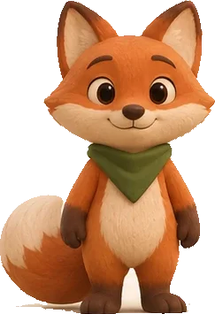
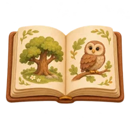
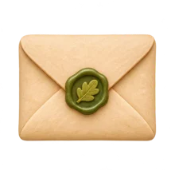
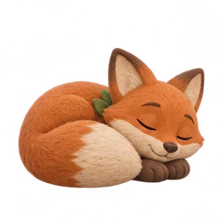
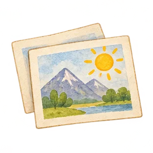
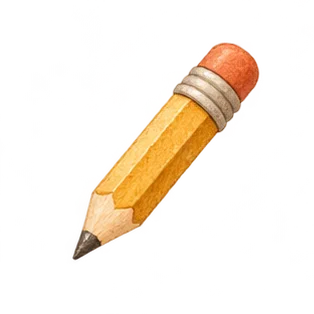
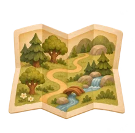
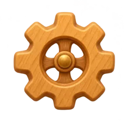
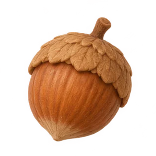
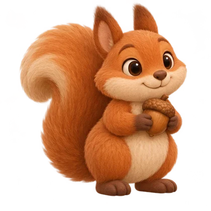
Every puzzle opens as a page of Fuchs' picture book, lying in the friend's clearing. The friend who set the puzzle stands at the page margin, so the child always sees who they are helping. All five newer rounds and all 24 original activities use the same page, ribbon, progress twig and tiles. Only the visual layer changes; rules, answers, order and buttons stay.
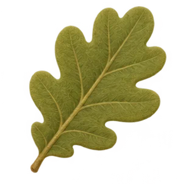
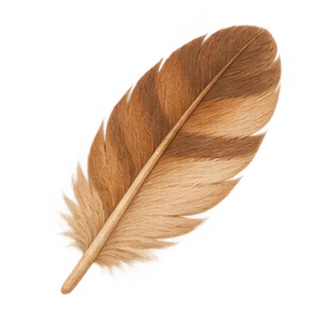
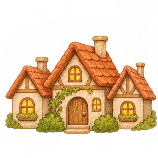
Haus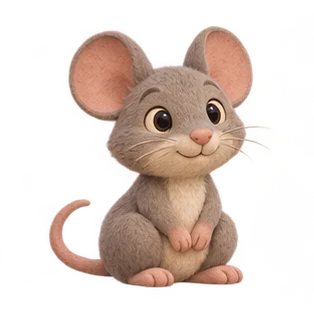
Maus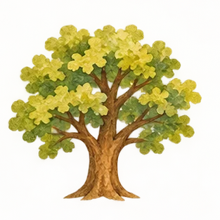
Baum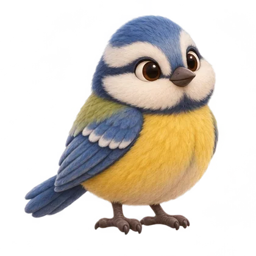
Blaumeise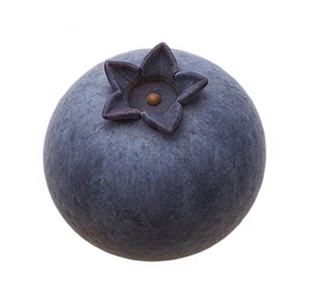
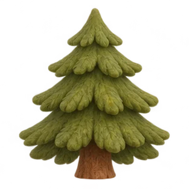
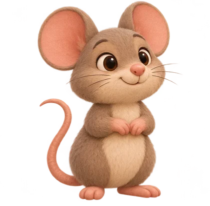
Maus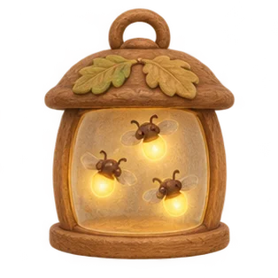
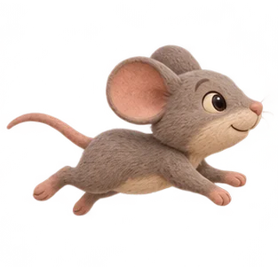
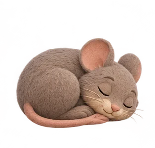
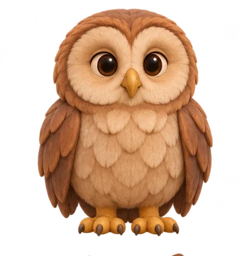
Waldkauz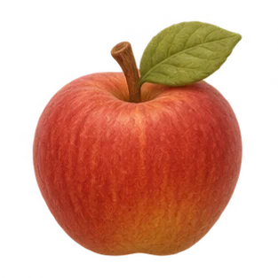
ansehen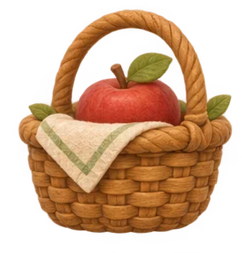
legenpuzzles.css change their skin. Task wording, steps and controls stay where they are.Menus are pages of the same book. Friends are bookmarks with their portraits; colouring pages are taped to the den wall; finished pictures hang on a clothes line.
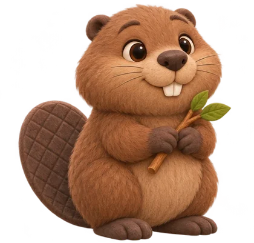
Biber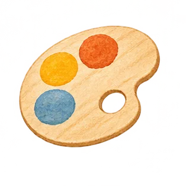
Malen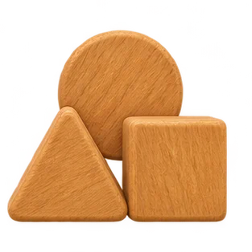
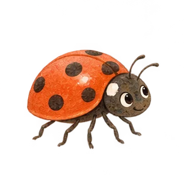
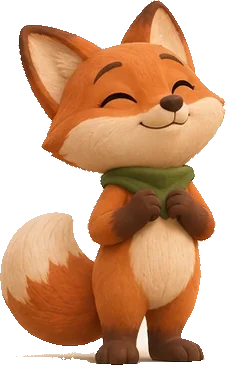
1The game currently shows several different foxes (sheet fox, crayon fox, 3D fox with white cheek wings, a different curled sleeping fox) and two different den doors. The rules below make every appearance trace back to one source.
Master = design/forest-friends/visuals/characters-v1.png and assets/forest-friends/postcard-friends.webp. Every 2D portrait is cut from these; every 3D model is matched to them.
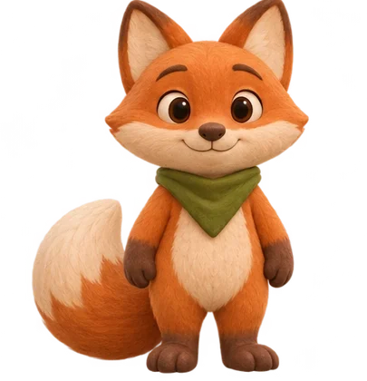
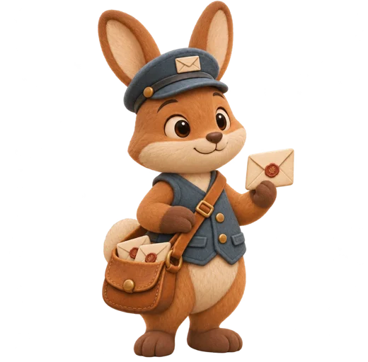
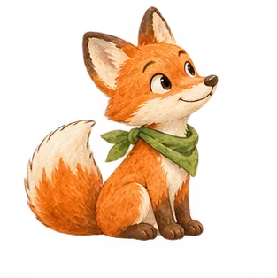
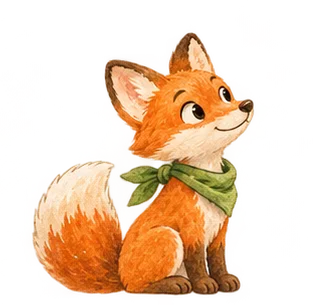
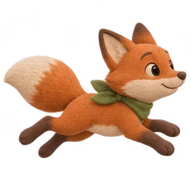
Inside the den the door is closed, arched, five honey planks, black strap hinges, brass mail lid and knob. Outside it currently shows an open arch with a bookshelf and armchair that the den does not have.
characters3d.js parameters)
Maus: grey-taupe #9a8c80, belly cream, ears pink inside #e8a4a0. Hase: cap and vest #4d6886, satchel #8a5a34 as on the portrait. Keep material count ≤ 4 per character.
Soft felt, warm light, no outlines. Used for: all friends, Fuchs, counters and rewards, toolbar icons, hotspots, progress items, celebrations.
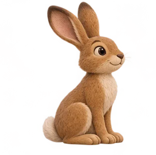
Hand-coloured, thin ink outline. Used only for word and object pictures inside the book (rhymes, vocabulary, sequences). Never for the friends.
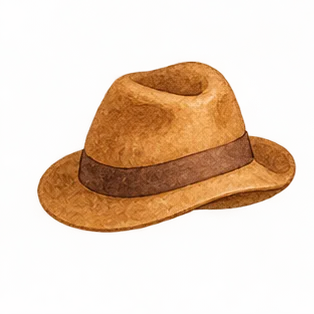
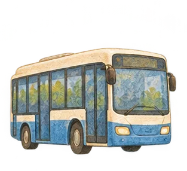
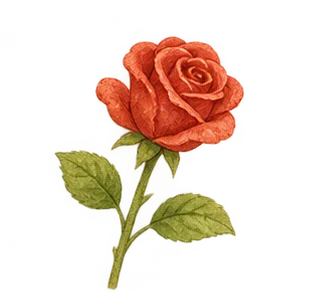
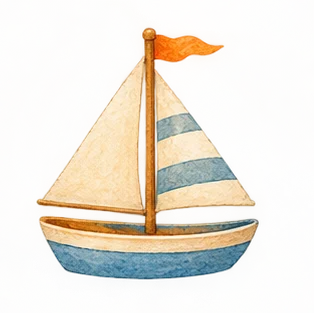
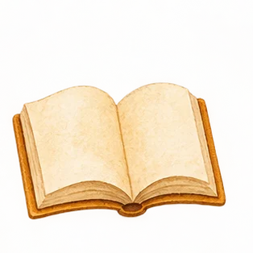
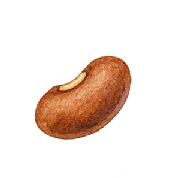
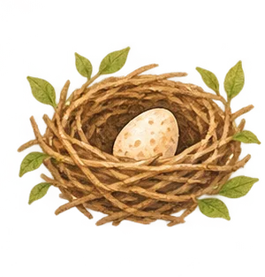
The 3D forest is already in the right style. It needs the matching door, the rebuilt cast, a softer brook and fewer draw calls so it holds a steady frame rate on an iPad 9.
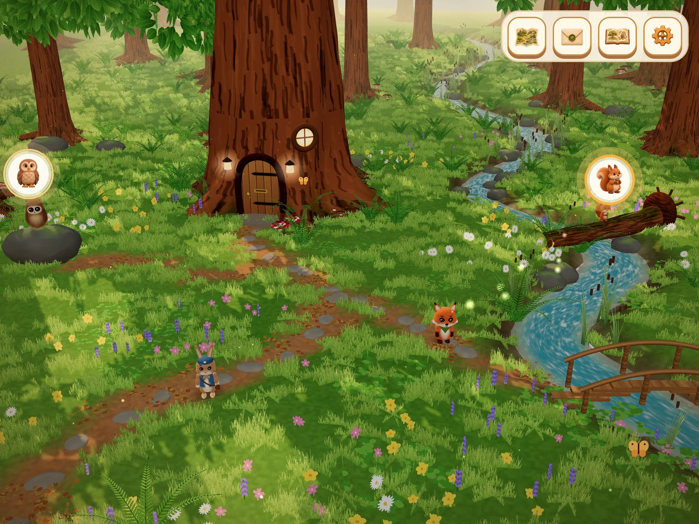
1lookdev/, using the game's character rigs. Everything is generated in code: no extra downloads, works offline in the home-screen app. Measured: 119 draw calls and 352 k triangles in this view; the landscape alone is 54 calls and 251 k triangles.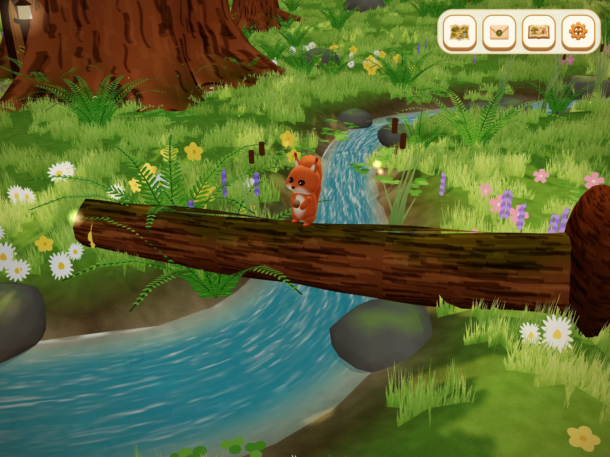
1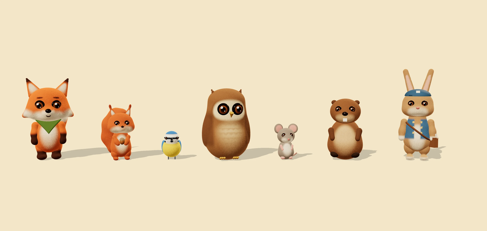
1lookdev/plush.js. Same names, sizes and joints as today's rigs, so the existing animations can drive them.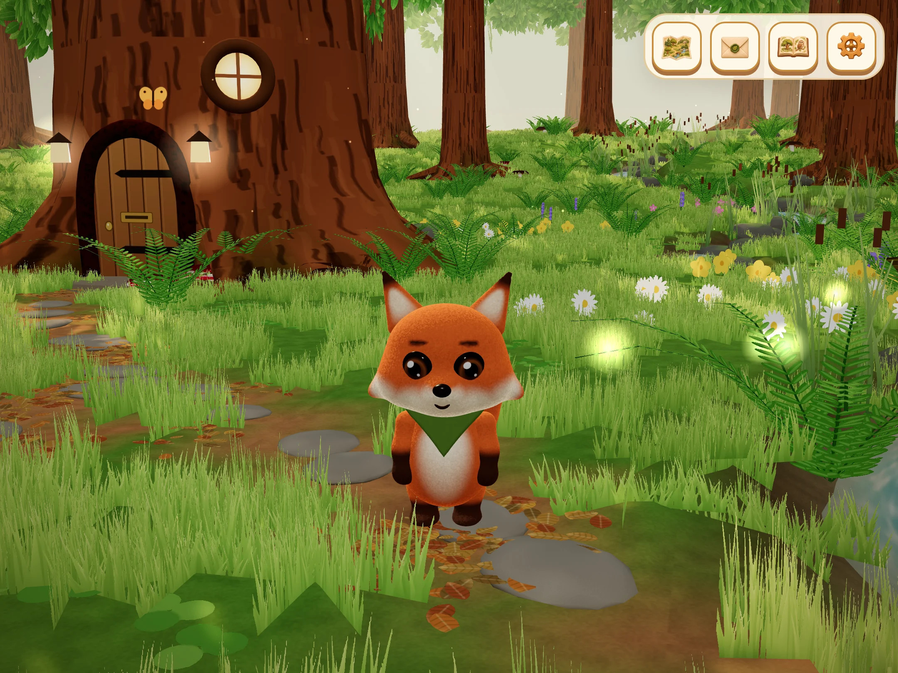
1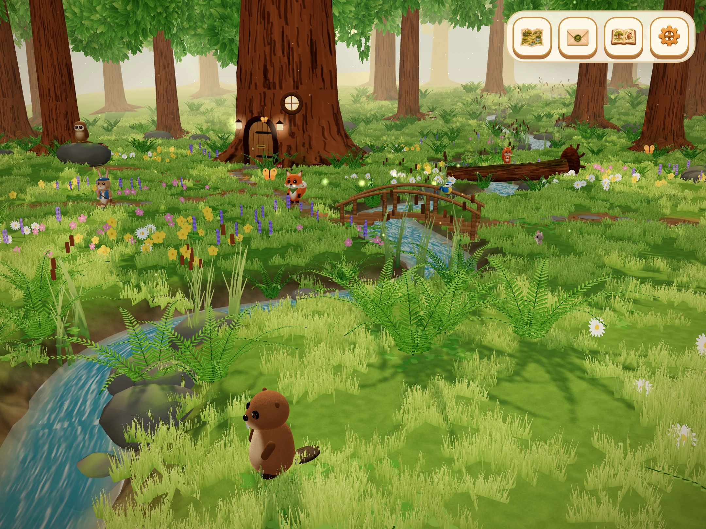
1A13 Bionic · 3 GB RAM · 2160 × 1620 px panel · Safari. Measured on the current build in desktop Chromium; device numbers must be re-measured on the iPad.
| Metric | Now | Target |
|---|---|---|
| Render scale (px per point) | 1.75 fixed | 1.25–1.5 adaptive |
| Pixels shaded per frame | 2.68 M | ≤ 1.97 M |
| Forest draw calls | ≈ 236 | ≤ 150 |
| Forest triangles | ≈ 650 k | ≤ 350 k |
| Den (3D fox only) | 33 calls, 60 fps | 30 fps when idle |
| Blur over the canvas | filter: blur(26 px) | none |
| Puzzle art download | ≈ 36 MB PNG | ≤ 8 MB WebP |
| Frame rate | not measured on iPad | 60 menus · ≥ 50 forest |
Under a puzzle page the 3D loop is already paused. Keep it so: the page and the 3D world never animate at the same time.
Today the walkable forest is one clearing of about 1,200 m², built in one piece at start-up. Ten times that, built the same way, would need about 2,400 draw calls per frame. The plan below splits the world into regions and 16 m tiles, so the iPad only ever draws what is near the fox: the cost per frame stays the same at 1× and at 10×.
Map scale 1 m = 3.2 px. Region names are placeholders for later content.
| Item | Limit |
|---|---|
| Draw calls | ≤ 150 |
| Triangles | ≤ 350 k |
| Tiles live (near / far) | ≤ 25 / ≤ 40 |
| Animated characters | ≤ 6 |
| GPU memory | ≤ 250 MB (textures shared by all tiles ≤ 64 MB) |
| Tile building | ≤ 4 ms per frame, ahead of the fox |
| Download per new region | ≤ 150 KB (built from code and data) |
?world=10x proves the budget before any new content exists.waldbuch.css)